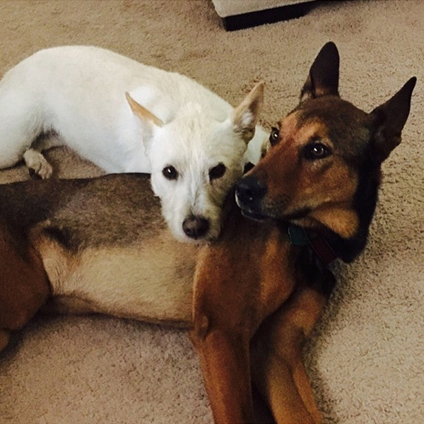
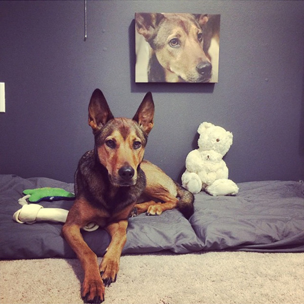
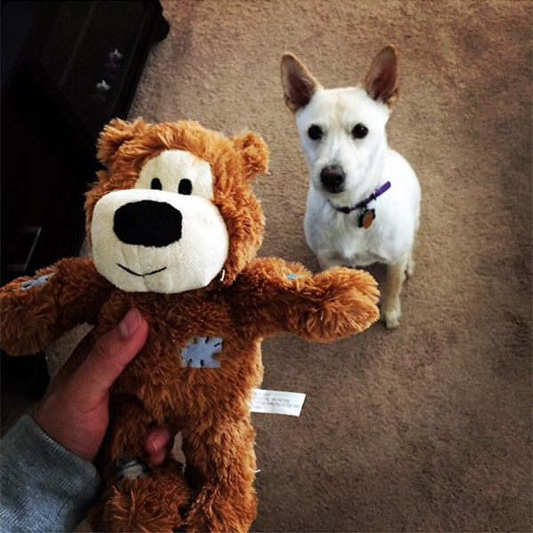

GEO'S LIFE

HOME
Welcome to Geo's website. Geo was born in Peru and moved to Miami, Florida when he was 9 years old. In this website you will find information about Geo and images of places I've visited. You will also se images of his adorable dogs (Max and Holly). Find out what are Geo's Likes and Dislikes by viewing the Likes and Dislikes section
Please feel free to contact him for more information. ENJOY!
HOME
Welcome to Geo's website. Geo was born in Peru and moved to Miami, Florida when he was 9 years old. In this website you will find information about Geo and images of places I've visited. You will also se images of his adorable dogs (Max and Holly). Find out what are Geo's Likes and Dislikes by viewing the Likes and Dislikes section
Please feel free to contact him for more information. ENJOY!
 ABOUT
ABOUT
Percy Giovanny Bustamante-Gooden, also known as GEO, was born in Chiclayo, Peru. He moved to Miami when he was 9 years old and enrolled Miami Edison Elementary Schoo. He was known for getting bad grades. When he got to High school, he had to be placed into a private school in order for him to get his high school diploma. He enrolled into Miami Dade College when he was 18, but life forced him to drop out of college and to work. 10 years later he decided to go back to college and now he's getting ready to graduate with a 4.0 GPA.
CONTACT
Please feel free to contact Geo for more information about his life.
Email: info@geoslife.com
Phone: 305-915-1598
Instagram: @GChico305
Facebook: Geo Bustamante
Linkedin: Linkedin.com/geo.bustamante
MY PETS
  